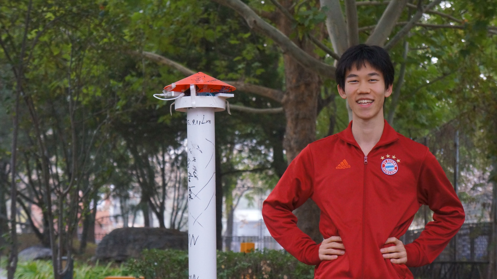
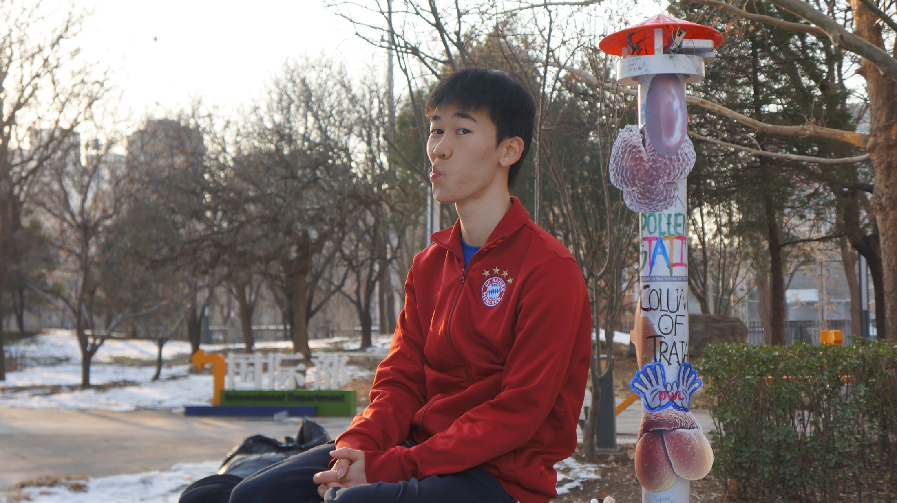

Public infrastructure · Sensing · 2024—2026
School pollen detection network
China's first school-based pollen detection station grew into four connected stations and a real-time app serving more than 6,000 people.

The need
Research only helps when people can use it.
Pollen conditions change quickly with place, wind, and rain. The goal was to move beyond periodic measurements and create reliable local information that students and families could check in real time.
The system
Hardware, data pipeline, and app—connected end to end.
- Built and deployed four physical monitoring stations across Beijing.
- Designed the station-to-app data pipeline for real-time updates.
- Added Wi-Fi connectivity for automatic reporting.
- Improved measurement accuracy under wind and rain conditions.
Air sample→Station→Wi-Fi upload→Data pipeline→App alert
Impact
A field system used at community scale.
The companion app now pushes real-time data to more than 6,000 users. The low-cost station also earned Beijing 1st Prize and National 2nd Prize at Invention Convention China.
4stations across Beijing
6,000+real-time app users
Top 10%Invention Convention China
Build archive
From an early prototype to a deployed station.
